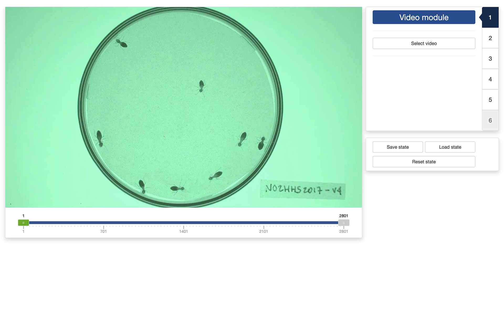
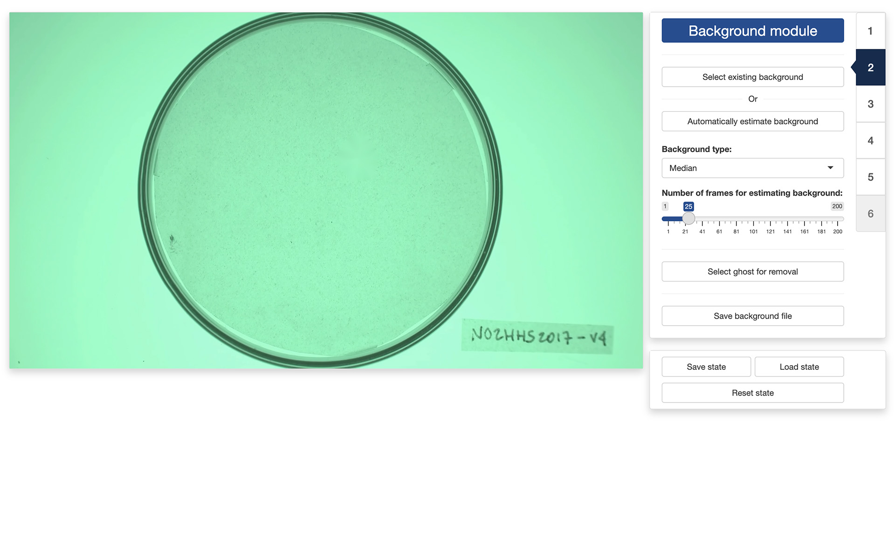
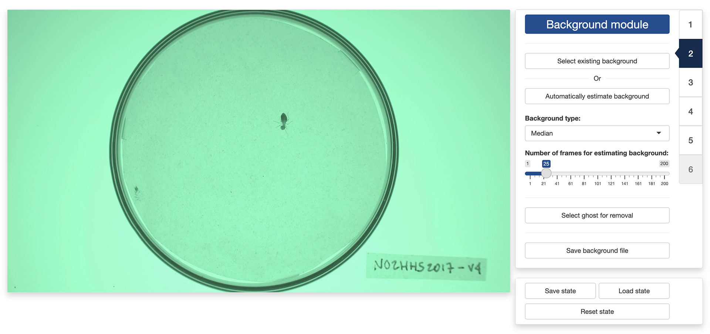
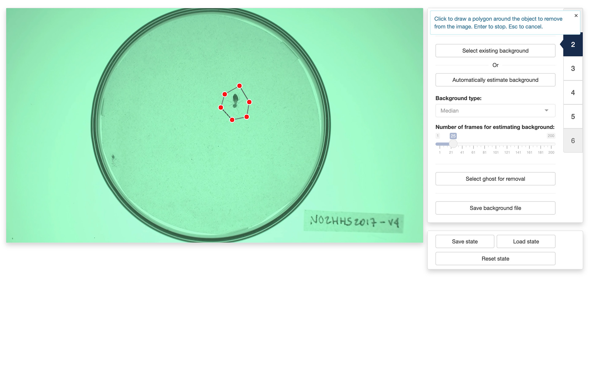
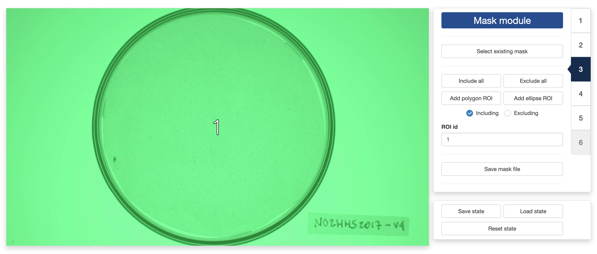
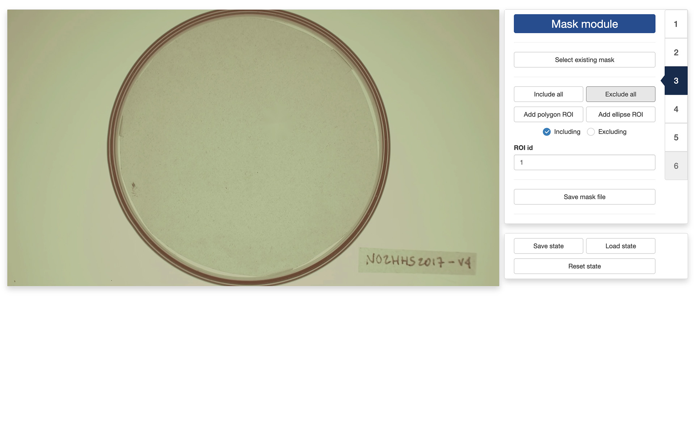
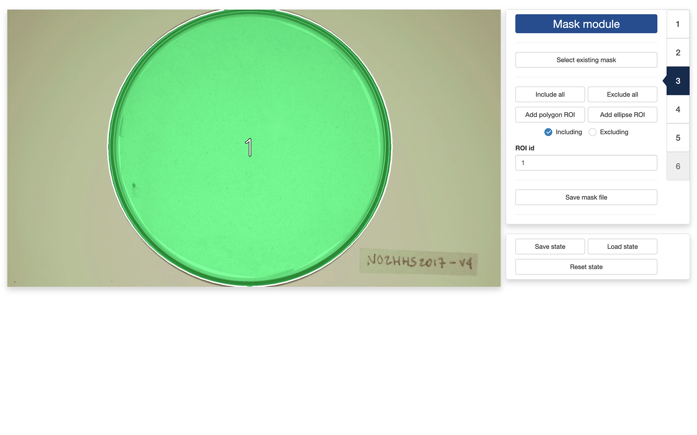
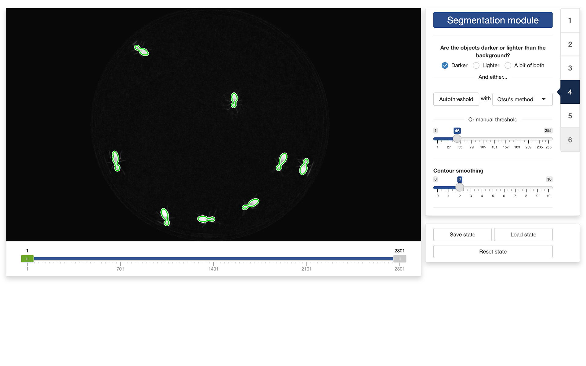
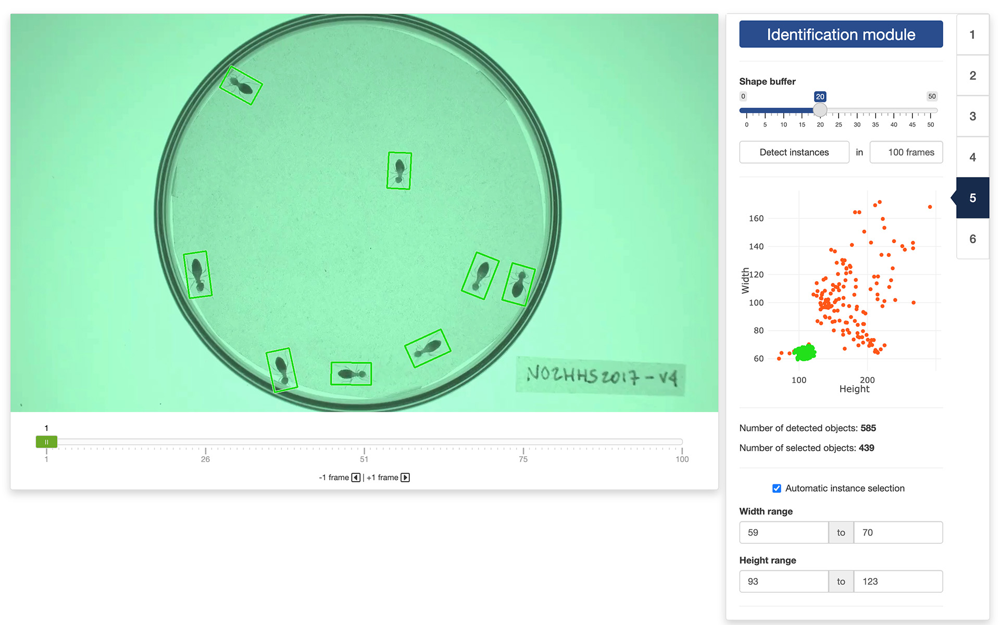
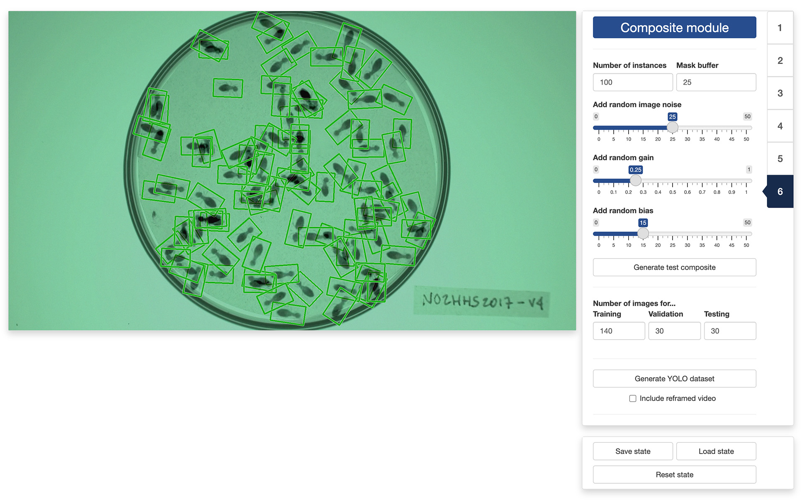

0. Introduction
Once you are ready to process a video, you can launch trackRai by typing the following command in the R console:

This will open the app launcher either in the viewer pane of RStudio and Positron, or in a separate window, depending on your local configuration. In RStudio at least, you can control where the app opens by setting the launch.browser option. For instance:
trackRai(launch.browser = shiny::paneViewer())will launch the app in the RStudio viewer pane.
Once the launcher is running, click on the “Prepare” button to launch the data preparation app. The launcher will close and the app will start shortly after. This app will help you generate a dataset that you can then use to train a YOLO model. The idea here is to use traditional computer vision techniques to isolate single instances of the objects that you would like to track, as well as the background over which these objects are moving. We will then use them to create composite images with random arrangements of an arbitrary large number of these isolated objects. Using that approach, we can generate automatically a large number of training images for YOLO, without requiring any manual labelling.
Note: this approach only works well if the background of the video is stable, with, ideally, no camera movement and no lighting variations. Good tracking results are not guaranteed otherwise. An application to label instances manually is being developed for more complicated scenarios.
1. Video module
The first step of the preparation process is to load a video file into the app. To do this, simply click the “Select video” button. This will bring up a navigator that you will use to locate the video file that you would like to process. Once you have located the video file in the navigator, click the “Select” button. The app will open the video and display its first image in the display window (see below).

You can navigate through the video by sliding the green tab along the timeline displayed below the video. The gray tabs can be used to restrict the analysis to a specific time interval of the video.
Once the app has opened the video, you can move to the “Background module” by clicking on the tab marked “2” on the right side of the control panel.
2. Background module
In the “Background module”, you can either choose to load an existing background image (e.g., an image of the empty experimental setup before the start of the experiment) or you can ask the app to automatically reconstruct that background from the video.

If you choose to select an existing background image, just click on the “Select existing background” button and use the navigator to locate and select the desired image. You can then skip the rest of this section and go directly to the next section.
If you choose to let the app reconstruct the background from the video, you will first need to decide on two things:
- The “Background type” which correspond to the algorithm that the app will use to reconstruct the background. Four algorithms are available:
- “Mean” computes a background image in which each pixel is the average of the corresponding pixels in the selected video frames. This is a fast algorithm. However it does not always produce good results.
- “Median” computes a background image in which each pixel is the median of the corresponding pixels in the selected video frames. This usually produces a better result than “Mean”, but will take longer to complete.
- “Minimum” computes a background image in which each pixel is the minimum of the corresponding pixels in the selected video frames. This usually produces a good result when the objects to isolate are lighter than the background.
- “Maximum” computes a background image in which each pixel is the maximum of the corresponding pixels in the selected video frames. This usually produces a good result when the objects to isolate are darker than the background.
- The “Number of frames for estimating background”. Better results are usually obtained with larger number of frames but the background will be slower to reconstruct.
Once you have selected these two parameters, click on the on the “Automatically estimate background” button and the app will start reconstructing the background from the video.
In some occasions, like in the image on the left below, the app will not reconstruct the background completely. This can happen, for instance, when an object did not move at all during the entirety of the video like it is the case here.

You can fix some of these “ghosts” by clicking the “Select ghost for removal” button. This will allow you to draw a polygon around the object to remove from the background by using the left button of your mouse/trackpad. Once you have surrounded the object with a polygon, use the return key on your keyboard to close the polygon. The app will then use the pixels surrounding the polygon that you traced to replace the object with its best guess about the color of the background below it.
Note: the ghost removal mode is very basic and may not yield good results with complex backgrounds. Another option is to save the background file with the ghosts and use a more advanced image editing software to remove them (for instance, Photoshop’s
Remove toolcan give much better results).
Once you are happy with background generated by the app, you can click the “Save background file” button to save the background image for later (re)use.
3. Mask module
The “Mask module” is optional and can be skipped. It should be used if you would like to restrict the extraction of instances to specific areas of the image, for instance to exclude the outside of an experimental arena where things may be moving that should not be tracked (e.g., the hands of the experimenter). By default, the app will use the entirety of the visible frame to perform the tracking.

The control panel of the “Mask module” allows you to either use an existing mask or to design your own. To use an existing mask, click the “Select existing mask” button and use the navigator to locate and select the desired mask image. A mask image should be a grayscale image of the same resolution of the video. Non-black portions of the image will be included in the tracking while black portion will be excluded. Different shades of gray can be used to delimit different parts of the mask.
If you would like to design your own mask (or modify an existing mask that you have loaded in the app), you can use the following controls:
- “Include all” tells the app to use the entirety of the visible frame to perform the tracking. This is a useful button to reset the mask to its default setting.
- “Exclude all” tells the app to use none of the visible frame to perform the tracking. This is a useful button to wipe out the mask before adding authorized areas for tracking using the “Add polygon ROI” and ”Add ellipse ROI” buttons.
- “Add polygon ROI” (region of interest) allows you to draw a polygon on the mask by using the left button of your mouse/trackpad. Once you are sastified with your polygon, use the return key of your keyboard to close it. If the “Including” radio button is selected, then the area inside the polygon will be included in the tracking. Otherwise, it will be excluded.
- “Add ellipse ROI” allows you to draw an ellipse on the mask by indicating 5 points along the periphery of the area of interest. Use the left button of your mouse/trackpad for this. Once you have finished adding the 5 points, the app will compute the ellipse best fitting them. It is recommended to select 5 points that are roughly equidistant along the periphery of the area of interest. If the “Including” radio button is selected, then the area inside the ellipse will be included in the tracking. Otherwise, it will be excluded.
- “ROI id” allows you to assign a unique identifier to each region of interest, allowing for separating the tracking of objects in each of them in post-processing.

You can combine including/excluding polygons and ellipses to define a mask as complex and detailed as you would like. Included areas will take a slightly greener tint in the display window while excluded areas will take a slightly more red tint (see images above).
Once you are satisfied with your design, you can save it for later (re)use by clicking the “Save mask file” button.
4. Segmentation module
Segmentation is the process of isolating objects of interests from the background of an image. In order to do so, the app first needs to know whether it is looking for objects that are darker or lighter than the background. You can do so by ticking the appropriate radio button at the top of the control panel in the “Segmentation module”.

Once this is done, the app will need to know how different from the background a pixel must be to be considered a part of one of the objects to isolate. In order to indicate that information to the app, you can use the threshold slider in the control panel. They will allow you to set the threshold difference above which a pixel is considered a part of an object and not a part of the background.
The objective is to find a threshold that creates a good separation between the objects to isolate and the background. You can see the result of changing the thresholds in the display window: all the parts of the image that are considered an object given the threshold will be surrounded by a green line (see image above). A good threshold will result in green lines tightly following the edges of the objects to isolate.
You can also let the app search for a good threshold by clicking the “Autothreshold” button in the control panel. The app can use multiple methods to estimate a threshold that provides good segmentation results. You can try select a method using the dropdown menu next to the “Autothreshold” button, and observe their effect by running the autothresholding operation again. You can then tweak manually this suggested threshold if you want.
Finally, you can exclude very fine details of the objects to isolate (e.g., the legs of the termites in the image above) by playing with the “Contour smoothing“ slider. This can be useful to obtain a more accurate tracking of the centers of mass of the objects (fine details can introduce unnecessary noise in the trajectory).
It is recommended to look at the result of the segmentation process in different parts of the video using the control slider below the video display. This will ensure that the selected threshold gives good results throughout the video.
5. Identification module
The purpose of this module is to identify segmented parts of the image that represent single instances of the objects we want to track. Each segmented portion of the image will be displayed surrounded by a rectangle. You can increase or decrease the size of the rectangles by using the “Shape buffer” slider in the control panel of the app. Ideally, you want that each rectangle encloses completely the whole body of an instance of the objects to track. If two instances are close to each other, they may be enclosed in the same rectangle, and that is fine, as long as enough instances are singled out.

Once the shape buffer is set, click the “Detect instances” button. This will measure the width and height of each rectangle across a set number of frames (which you can adjust in the numerical input field next to the button). If the “Automatic instance selection” tick box is checked, the app will suggest a range of widths and heights corresponding to rectangles that are likely to represent single instances. You can untick the box to manually adjust these ranges.
The results of the selection process will be displayed in a graph in the control panel and through the colors of the rectangles in the display window. Green dots (and rectangles) represent objects that are thought to be single instances. Red-orange dots represent objects that are thought not to be single instances (i.e., either multiple instances or incomplete instances). You can navigate through the selected frames to review the results of the instance selection. If one of the objects is not correctly identified, you can click on it to change its status (from green to red-orange, or vice versa).
Note: If you modify the buffer size or the number of images used to detect the instances after computing the statistics, you will need to run the instance detection again to take into account the new parameters.
6. Composite module
The final step of the process is to generate the training dataset itself. This will create composite images in which a set number of instances will be printed over the background image, at random locations and orientations within the boundary of the mask loaded/created earlier. This will also create the bounding boxes of the objects that YOLO needs to learn what the objects look like.

First, you will set the “Number of instances” that will be included in each of the composite images. The number of instances should be high enough to result in a lot of random arrangements and overlaps so that YOLO can generalize better to situations where objects touch or overlap. You can also set a “Mask buffer” zone to ensure that the printed objects do not overlap too much with your mask boundaries (i.e., do not stick out the observation area).
Next, you can “Add random image noise” to the composite images in order to increase the generalizability of the YOLO training. You can also “Add random gain” and “Add random bias” to change the contrast and luminosity of the the composite images for even more generalizability.
To check the effect of each parameter on the resulting composite images, you can click on the “Generate test composite” button to generate one or more sample composite images.
Once you are satisfied with the results, you can set the number of images that will be used for training, validating, and testing the YOLO model that you will train in a separate app. A recommended breakdown is to reserve 70% of the images for training, and 15% for validating and testing, respectively.
You can then generate the training dataset by clicking on the “Generate YOLO dataset” button. This will bring up a file manager and you can select the location where you would like the dataset to be saved (a folder named “YOLO” will be created at that location). Once the process terminates, you are done and you can close the app. The next step will be training a YOLO model using the dataset you just created.
Note: When generating the training dataset, you can also ask the app to create a reframed video by ticking the tick box at the bottom of the sidebar. This will prepare a video file in which everything outside the mask will be removed and the dimensions of the image will be set to optimize the processing done by YOLO during the training and tracking phases. This is completely optional and will add some processing time, but performing the training and tracking on the reframed video can be up to twice as fast as on the original video, depending on the number of objects to track.
The video used throughout this tutorial was provided by Sridhar, V. H., Roche, D. G., and Gingins, S. (2019). Tracktor: Image-based automated tracking of animal movement and behaviour. Methods Ecol. Evol. 10, 691. doi:10.1111/2041-210X.13166 and used here with permission of the authors.